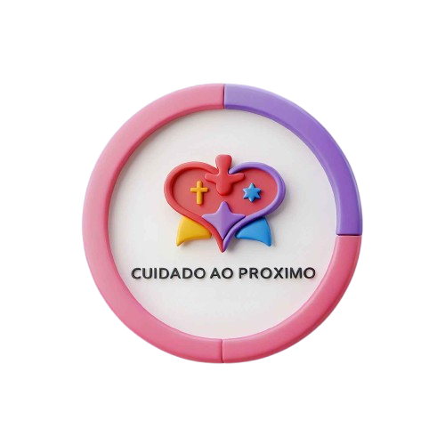

Promover o desenvolvimento integral entre comunidades por meio de ações sociais em valores de solidariedade e sustentabilidade. Nosso objetivo é despertar a responsabilidade cidadã global, estimulando o exercício da cidadania ativa.
Ser reconhecida como uma organização de referência no fortalecimento do desenvolvimento humano e social, destacando-se pela sua abordagem inclusiva e transformadora.
Somos a ONG Cuidado ao Próximo, uma organização comprometida em apoiar e transformar comunidades carentes. Desde nossa fundação em 2022, temos nos dedicado a criar oportunidades e promover o bem-estar de indivíduos e famílias que enfrentam dificuldades. Acreditamos no poder da união e no impacto positivo de cada ação, por menor que pareça. Nosso trabalho é pautado na confiança, respeito e no compromisso de fazer a diferença, ajudando a construir uma sociedade mais justa e solidária. Trabalhamos lado a lado com as comunidades, ouvindo suas necessidades e criando soluções sustentáveis para enfrentar os desafios que elas enfrentam. Por meio de nossas iniciativas, buscamos não apenas suprir necessidades imediatas, mas também gerar mudanças duradouras, fortalecendo as bases para uma vida mais digna e plena. Com o apoio de voluntários, doadores e parceiros, seguimos em frente com o compromisso de transformar realidades e promover a inclusão social. Junte-se a nós nessa jornada de cuidado, transformação e esperança. A sua colaboração é fundamental para que possamos continuar a fazer a diferença na vida de tantas pessoas.

.png)
.png)